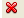
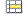
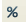
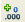
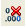
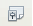
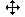
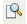

Tractament de la informació numèrica
El full de càlcul ajuda a resoldre situacions i problemes de la vida quotidiana amb un gran estalvi de temps. Permet organitzar les dades, fer càlculs, ressaltar visualment elements, dissenyar gràfics…
Ofereix la utilíssima possibilitat de tornar a calcular automàticament tot el full de càlcul en el moment en què es modifica un valor.
Conceptes bàsics
Un full de càlcul consisteix en una quadrícula organitzada en columnes i files. Cada columna està identificada per una lletra i cada fila per un número.
La intersecció entre una fila i una columna és una cel·la.
Cada cel·la s’identifica per la columna i la fila corresponent: A1, B5, D4… A la imatge (figura), la cel·la seleccionada és la B5.

La cel·la on està situat el cursor és la cel·la activa. Quan seleccioneu una cel·la, es mostra dins un marc negre. Quan seleccioneu més d’una cel·la, el seu fons es mostra de color blau. Per seleccionar diverses cel·les, premeu el botó esquerre del ratolí i, sense deixar-lo anar, moveu-lo sobre les cel·les que voleu seleccionar.
Un llibre està format per diferents fulls de càlcul que es desen en un mateix fitxer. El LibreOffice versió 3 desa, per defecte, un llibre amb l’extensió ODS.
Un rang està format per un conjunt de cel·les veïnes. Per identificar un rang, cal anomenar-lo per la cel·la que està més amunt a l’esquerra i la que està més avall a la dreta. El rang B3:D6 conté les cel·les que estan incloses dins la selecció de B3 fins a D6. A l’exemple de sota (figura), les cel·les seleccionades formen el rang B3:D6.
Dins les cel·les, podeu introduir text, nombres i fórmules. Un cop introduït el contingut, cal prémer la tecla Retorn per confirmar.
Full de càlcul: canviar el nom d'un full, afegir un full, canviar l'ordre dels fulls...
D’entrada, un llibre nou conté tres fulls: Full1, Full2 i Full3. Per canviar de full, només fa falta fer clic sobre la pestanya corresponent (figura).
Per canviar el nom d’un full, situeu-vos a sobre la pestanya que l’identifica i feu clic amb el botó dret del ratolí. Al menú contextual (figura), escolliu l’opció Reanomena el full… Al diàleg que s’obre, escriviu un nom nou per al full que estigui relacionat amb el seu contingut, i feu clic al botó D’acord. També podeu canviar el nom al menú Format \ Full \ Reanomena.
Per afegir un full nou, l’opció més ràpida és fer un clic a l’espai que hi ha a continuació de les pestanyes dels fulls. S’obrirà un diàleg per afegir un full nou (figura).
També podeu fer clic amb el botó dret a la pestanya d’un full i, al menú contextual, escollir l’opció Insereix un full. Una altra possibilitat és anar al menú Insereix / Full….Al diàleg que s’obre, heu d’escollir on voleu que s’afegeixi el full nou.
Per canviar l’ordre dels fulls de càlcul, feu clic amb el botó dret a la pestanya amb el nom del full, al menú contextual, escolliu l’opció Mou \ Copia….Al diàleg Mou / Copia el full, indiqueu què voleu fer, moure o copiar el full, i on voleu situar-lo (figura).
També hi podeu accedir des del menú Edita \ Full \ Mou \ Copia….
Introduir una fórmula
Un full de càlcul permet fer càlculs amb valors continguts a diferents cel·les. Amb una fórmula indiqueu quines operacions es faran amb els valors dipositats a les cel·les que assenyaleu.
Qualsevol operació que vulgueu fer amb un full de càlcul ha de portar el símbol = al davant. Introduïu dins una cel·la una operació qualsevol, per exemple =3+2, i feu un clic a la tecla Retorn. Veureu com, dins la cel·la, es mostra el resultat.
Un altre exemple:
Introduïu un valor a la cel·la A1 i un altre a la cel·la B1. A la cel·la C1, introduïu la fórmula =A1+B1, feu un clic a la tecla de Retorn i comproveu com es mostra el resultat (figura).
Seleccioneu de nou la cel·la C1 i mireu la barra de fórmules. Fixeu-vos com a la barra de fórmules es mostra la fórmula que abans heu introduït (figura). A la cel·la C1, es mostra el resultat.
Proveu a veure què passa si canvieu el símbol de sumar + pel símbol de restar -, o bé pel de multiplicar * o el de dividir /.
Com heu vist, les fórmules permeten fer càlculs amb els valors introduïts a les cel·les. Si una fórmula fa referència a una cel·la, canviant el valor de la cel·la, canvia automàticament el resultat de l’operació, que es mostra a una altra cel·la.
Podeu escriure les fórmules a la barra de fórmules, o bé dins la mateixa cel·la on voleu que es mostri el resultat.
Per escriure una fórmula a la barra de fórmules:
- Al full de càlcul, situeu el cursor al lloc on voleu que es mostri el resultat.
- A la barra de fórmules, feu un clic al símbol = Fixeu-vos com es modifica la botonera de la barra de fórmules.
- Escriviu la fórmula.
- Feu un clic a la tecla Retorn o al botó Aplicar.
- El resultat es mostrarà a la cel·la que abans heu indicat (figura).
- Aplicar
El botó Rebutjar o la tecla Esc eliminen el contingut que heu introduït.
- 
- Rebutjar
Per escriure una fórmula a la mateixa cel·la:
- Situeu el cursor dins la cel·la on voleu que es mostri el resultat.
- Escriviu una fórmula, sempre començant amb el símbol de funció =.
- Després d’escriure la fórmula, confirmeu amb la tecla Retorn i es mostrarà el resultat.
Fórmules bàsiques
Donades les cel·les C3 i E3, voleu:
- Sumar els valors de les cel·les: a la cel·la on voleu que es mostri el resultat, escriviu la fórmula =C3+E3
- Restar els valors de les cel·les: a la cel·la on voleu que es mostri el resultat, escriviu la fórmula =C3-E3
- Multiplicar els valors de les cel·les: a la cel·la on voleu que es mostri el resultat, escriviu la fórmula =C3*E3
- Dividir els valors de les cel·les: a la cel·la on voleu que es mostri el resultat, escriviu la fórmula =C3/E3
- Calcular un percentatge del valor introduït a una cel·la. S’explica amb un exemple: donada la cel·la D6, voleu calcular el 15%. La fórmula és =D6*15%.
També podeu crear fórmules escrivint el nom de l’operació amb lletres i utilitzant parèntesis:
- =SUMA(A1;B1) és el mateix que =A1+B1.
- =SUMA(A1:A9) donarà com a resultat la suma de tots els valors introduïts al rang A1:A9, és a dir, les cel·les de la columna A situades entre les files 1 i 9, ambdues incloses.
- Suma
El botó Suma de la barra de fórmules suma automàticament els valors de les cel·les situades per sobre de la cel·la on es troba el cursor a la mateixa columna. Feu clic al botó Suma, un rectangle de color blau emmarca les cel·les que se sumaran (figura).
Si hi esteu d’acord, feu clic a la tecla Retorn i es mostrarà el resultat (figura).
Buscar la màxima, la mínima i la mitjana (figura):
Donat el rang B1:B7, cal escriure la fórmula següent per cercar:
- la màxima o valor més alt: =MAX(B1:B7)
- la mínima o valor més baix: =MIN(B1:B7)
- el valor mitjà de tots els valors de les cel·les indicades: =MITJANA(B1:B7)
L'auxiliar de funcions
Per executar l’auxiliar de funcions, feu clic a la icona corresponent de la barra de fórmules.
- Auxiliar de funcions
L’auxiliar de funcions us ajuda a crear la sintaxi de les fórmules. Seguint les indicacions de l’auxiliar, introduireu la fórmula a la cel·la escollida.
Les funcions estan classificades en categories (figura). Seleccionant una categoria, es mostrarà una relació de les funcions que conté (figura).
Fent un clic sobre una funció, us informa del càlcul que farà (figura i figura).
Fent doble clic, seleccioneu una funció i es mostrarà el diàleg per crear la fórmula.
Veureu un camp (poden ser més camps, segons de quina funció es tracti) on heu d’introduir l’identificador de la cel·la. El podeu escriure manualment, o bé fer clic sobre la icona Seleccionar cel·la.
- Seleccionar cel·la
El diàleg per seleccionar una cel·la consisteix en un rectangle amb un camp on s’introdueix l’identificador de cel·la (figura). Al full de càlcul, feu un clic sobre la cel·la que voleu fer entrar. Fent un clic a Seleccionar cel·la, l’identificador de la cel·la seleccionada s’introduirà a la fórmula.
Si heu de fer referència a diverses cel·les, seguiu el mateix procediment. Finalment, l’assistent us mostra la fórmula creada, el resultat, us avisa si hi ha algun error… Feu clic a D’acord per introduir la fórmula al full de càlcul.
Un altre exemple:
Voleu obtenir el mínim comú múltiple dels valors continguts a diferents cel·les d’un full de càlcul. Seleccioneu la cel·la del full de càlcul on voleu que es mostri el resultat i feu clic a la icona per executar l’auxiliar de funcions. Fent doble clic, seleccioneu la funció que voleu obtenir, en aquest cas, MCM (figura).
- Auxiliar de funcions
Escriviu l’identificador de les cel·les que heu d’introduir a la fórmula, o bé les seleccioneu amb l’ajuda de l’auxiliar Seleccionar una cel·la. La fórmula es crea automàticament i, fent clic a D’acord, s’introdueix el resultat a la cel·la que abans heu indicat.
- Seleccionar cel·la
A Estructura es mostra l’estructura jeràrquica de la fórmula (figura). Un punt vermell indica que hi ha un error. Un punt blau indica que les dades s’han introduït correctament.
Copiar i enganxar fórmules
Podeu seleccionar una o diverses cel·les, copiar-les i enganxar-les a un altre lloc. Si les cel·les que voleu enganxar tenen fórmules, s’actualitzaran a la cel·la nova.
Un exemple: si la fórmula que copieu de la cel·la A9 és:
=SUMA(A2:A8)
i l’enganxeu a la cel·la B9, automàticament es modifica per:
=SUMA(B2:B8)
Per copiar una fórmula, seleccioneu la cel·la i feu:
Control + C o aneu al menú Edita \ Copia
Per enganxar la fórmula que heu copiat:
Control + V o aneu al menú Edita \ Enganxa
Una altra manera molt més pràctica de fer l’acció de copiar i enganxar és seleccionar la cel·la que conté la fórmula i arrossegar la selecció cap a altres cel·les estirant del petit quadrat negre del vèrtex inferior dret (figura). Quan deixeu anar el ratolí, la fórmula s’adapta i s’actualitza amb els identificadors de les altres cel·les.
Els valors dinàmics (que s’actualitzen automàticament) reben el nom de referència relativa. Pel contrari, a una referència absoluta, els valors esdevenen estàtics i no es modifiquen en funció de variables.
Afegir automàticament llistes i sèries
Podeu veure les llistes predefinides de què disposeu a Eines \ Opcions \ LibreOffice Calc \ Ordena les llistes. En aquesta mateixa finestra, també podeu crear noves llistes personalitzades.
Dins una cel·la, comenceu a escriure un nom de la llista, no cal que sigui la paraula completa. A continuació, seleccioneu la cel·la i estireu del vèrtex inferior dret cap a la direcció que vulgueu: cap a la dreta, cap avall… Automàticament s’ompliran les cel·les amb els noms de la llista predefinida que el LibreOffice ha reconegut.
Les llistes predefinides del LibreOffice es mostraran en l’idioma que hàgiu indicat a Eines \ Opcions \ Configuració de la llengua.
Per fer sèries aritmètiques, seleccioneu dos o més cel·les veïnes que continguin valors. A continuació, arrossegueu estirant del vèrtex inferior dret i les cel·les s’ompliran amb la sèrie que el LibreOffice, seguint una lògica aritmètica, hagi reconegut.
Podeu definir més sèries a Edita \ Emplena \ Sèries… (figura).

Primer, seleccioneu les cel·les que voleu emplenar, a continuació, a la finestra Emplena la sèrie, indiqueu el valor inicial, el valor final, l’increment… Feu clic a D’acord i s’ompliran les cel·les amb la sèrie que heu configurat (figura).
Donar format a les cel·les seleccionades d'un full de càlcul
Per seleccionar tota una columna, feu un clic a la casella on es troba la lletra del seu nom. Per seleccionar tota una fila, feu un clic a la casella on es troba el número que la identifica. La columna o la fila seleccionades mostren el fons blau.
- Modificar l’amplada de columnes i l’alçada de files
Podeu modificar l’amplada de les columnes (figura) o l’alçada de les files situant el cursor a l’encapçalament de les columnes o de les files i arrossegant la línia.
Si a la capçalera feu doble clic sobre la línia, la columna automàticament s’adapta a l’amplada òptima, la de la cel·la més plena. El mateix passa amb les files, que s’ajusten a l’alçada òptima.
També podeu modificar l’amplada de la columna i l’alçada de fila seleccionada a través dels menús Format \ Columna i Format \ Fila (figura).
Us suggereixen una amplada o una alçada òptima, respectivament, per a la columna o fila seleccionada, en funció del contingut que heu introduït a les cel·les.
Una altra possibilitat és especificar l’amplada o l’alçada que desitgeu en cm. També podeu fer que una columna o una fila no es mostrin temporalment.Evidentment, és suficient seleccionar una cel·la per modificar les mides de tota la fila o tota la columna on pertany la cel·la.
Afegir columnes i files noves
Per afegir una columna nova, aneu a Insereix \ Columnes. La columna nova se situa a l’esquerra de la cel·la activa i desplaça columnes cap a la dreta. Si seleccioneu diverses columnes, s’insereix el mateix nombre de columnes noves que heu seleccionat.
Per afegir una fila nova, aneu a Insereix \ Files. La fila nova se situa a sobre de la fila seleccionada i desplaça files cap avall. Si seleccioneu diverses files, es creen tantes files noves com heu seleccionat.
També podeu inserir files o columnes noves seleccionant la fila o la columna i desplegant el menú contextual amb el botó dret del ratolí.
Unir cel·les
Fent clic a la icona Fusiona les cel·les o anant al menú Format \ Fusiona les cel·les, podeu unir les cel·les veïnes seleccionades en una sola cel·la. Un missatge us pregunta: ”¿Voleu moure el contingut de les cel·les amagades a la primera fila?”. Si contesteu afirmativament, es mostrarà tot el contingut introduït a les cel·les.
Podeu desfer l’acció seleccionant la cel·la unida i desmarcant l’opció Fusiona les cel·les.
- 
- Fusiona les cel·les
Suprimir cel·les
Per suprimir cel·les, primer les heu de seleccionar. Situeu-vos a sobre i feu clic amb el botó dret. Al menú contextual, escolliu si voleu eliminar només el contingut, o bé les cel·les seleccionades (figura).
També podeu accedir a aquesta opció des del menú Edita \ Suprimeix els continguts i Edita \ Suprimeix les cel·les.
Uns diàlegs us presentaran opcions sobre com s’ha d’eliminar el contingut o les cel·les.
Alinear el contingut de les cel·les
Per defecte, quan a una cel·la introduïu contingut, el text se situa a l’esquerra i les xifres se situen a la dreta.
Podeu canviar l’alineació per defecte seleccionant les cel·les i fent clic amb el botó dret. Al menú contextual, escolliu l’opció Formata les cel·les (figura). També hi podeu accedir des del menú Format \ Cel·les… La finestra que s’obre us permet configurar moltes opcions de format. Feu un clic a la pestanya Alineació.
A Horizontal, escolliu si voleu alinear a l’esquerra, dreta, centre, justificat…
A Vertical, escolliu si voleu alinear el text de manera que se situï a la part superior, central o inferior d’una fila.
A Direcció d’escriptura teniu l’opció d’inclinar la selecció amb l’angle que indiqueu. Marcant l’opció Apilat verticalment, el contingut de la cel·la, lletres o nombres, s’haurà de llegir de dalt a baix.
Donar format als números
Per donar format als números, primer seleccioneu les cel·les on voleu aplicar el format, a continuació, aneu al menú Format \ Cel·les i, a la finestra Atributs de les cel·les, feu clic a la pestanya Nombres (figura). També hi podeu accedir fent clic amb el botó dret sobre la selecció i escollint l’opció del menú contextual Formata les cel·les.
Podeu escollir diferents categories de la llista (data, hora, monedes, percentatges…) i indicar el nombre de decimals que voleu que es mostri, si voleu que els valors negatius es mostrin de color vermell…
A la part central dreta de la finestra, obteniu una previsualització d’un número seleccionat amb el format escollit.
A la barra de format, a sota de la barra d’eines, trobeu unes icones per donar format als números de les cel·les seleccionades (taula).
| Icona | Format numèric |
|---|---|
| Moneda | |
|  | Percentatge |
| Estàndard | |
|  | Afegeix una posició decimal |
|  | Suprimeix una posició decimal |
Donar format a les cel·les: font, color de la font, color de fons, marc...
Primer, seleccioneu les cel·les on voleu aplicar el format i, a continuació, aneu al menú Format \ Cel·les. També hi podeu accedir fent clic amb el botó dret sobre la selecció i escollint l’opció Formata les cel·les del menú contextual. S’obre la finestra Atributs de la cel·la. Podeu escollir:
- Format dels números, com s’ha comentat abans.
- Font: tipus de lletra, estil i mida. Mostra una previsualització a la mateixa finestra.
- Efectes de font: diferents tipus de subratllat, color del subratllat, tipus de ratllat, color de la font, relleu, contorn, ombra… Mostra una previsualització a la mateixa finestra.
- Alineació, com s’ha comentat abans.
- Marc: disposició de les línies, estil, distància del text…
- Fons: escollir entre 91 colors. Mostra previsualització.
- Protecció de cel·la: segons les opcions que escolliu, configura, per a la cel·la o cel·les seleccionades, que no es puguin fer canvis, que no es mostrin les fórmules, que no s’imprimeixin… Per introduir una contrasenya, aneu a Eines \ Protegeix document.
Formatació condicional
Aquesta opció permet que, si es dóna una condició determinada, es ressalti el valor amb el color, format… que indiqueu.
Primer, cal que creeu un estil nou per al format condicional. Feu un clic a la icona de l’estilista.
- 
- Icona de l'estilista
També podeu anar al menú Format \ Estils i formatació per fer que es mostri la finestra de l’estilista (figura).
Ja només queda indicar quina és la condició o quines són les condicions (figura). Seleccioneu les cel·les on voleu aplicar un format condicional i aneu al menú Format \ Formatació condicional. S’obrirà el diàleg Formatació condicional. En el vostre cas, heu indicat que, quan el valor de la cel·la sigui inferior o igual a 100, s’apliqui el format que abans heu creat.
Afegir un diagrama
A partir de les dades d’un full de càlcul, podeu crear un gràfic.
Primer, seleccioneu les cel·les que s’inseriran al gràfic. Si voleu seleccionar cel·les que no són veïnes, utilitzeu la tecla Control per sumar. Per seleccionar tota una columna, feu clic sobre la lletra amb el seu nom. Per seleccionar tota una fila, feu clic sobre la xifra que la identifica.
A continuació, activeu la icona de la barra d’eines Diagrama, o bé aneu al menú Insereix \ Diagrama….
- Diagrama
A continuació apareix automàticament el gràfic corresponent a la selecció feta i al mateix temps, s’obre la finestra de l’Auxiliar de diagrames. L’auxiliar consta de quatre finestres de diàlegs on podeu anar indicant les característiques del diagrama (figura).
Al primer diàleg, es mostren els tipus de diagrama i apareix remarcat el diagrama que el programa ha fet per defecte amb les cel·les seleccionades. Si voleu canviar el tipus de gràfic només heu de fer clic sobre l’opció desitjada. Automàticament veureu el canvi reflectit en el diagrama.
Al segon diàleg, es mostren totes les cel·les que heu seleccionat. Marqueu si voleu que les etiquetes que informen dels conceptes (nom dels continguts) siguin els de la primera columna seleccionada, els de la primera fila o les dues opcions i també si voleu la sèrie de dades en files o en columnes (figura). Feu clic al botó Següent.
En el tercer diàleg, podeu modificar l’interval de dades (figura): suprimir sèries, afegir sèries i indicar l’interval per a la categoria de l’eix (és a dir, els rètols que portarà l’eix de categories).
En l’últim diàleg, podeu escriure el títol del gràfic i els títols dels eixos (si en voleu), indicar si voleu que es mostri la llegenda i, si és el cas, marcar-ne la posició. En les tres últimes finestres de diàleg podeu tornar enrere, continuar endavant o finalitzar (figura).
Finalment, feu clic al botó Finalitza. Si l’aspecte del diagrama no us acaba de convèncer, no us preocupeu, ja li donareu format.
El diagrama està vinculat al full de càlcul. Si canvieu algun valor al full, també es modifica al diagrama.
Canviar el format del diagrama
Fent un sol clic (figura), es mostren uns tiradors verds que permeten canviar la mida del diagrama.
També es mostra el símbol que permet moure el diagrama per canviar-lo de lloc.
- 
- Moure el diagrama
Al menú contextual, accediu a les opcions que es mostren en la figura.
Fent doble clic (figura), el diagrama mostra una línia grisa al voltant amb uns punts negres.
A més de les opcions anteriors de canvi de mida i de lloc, aquesta selecció activa els menús, la barra d’eines i el menú contextual per donar format al diagrama.
Fent un sol clic sobre algunes de les icones de la barra de format, canviareu automàticament l’aspecte del diagrama. Altres icones us permeten modificar el tipus de diagrama, canviar manualment els valors de les entrades… (figura).
Si el gràfic està seleccionat amb la vora grisa visible (doble clic) i moveu el cursor lentament amb el ratolí sobre les diferents parts del gràfic, veureu com van sortint, en finestretes de fons groc, els noms d’aquestes parts: Títol principal (és el títol), Àrea del diagrama (és el fons de la finestra gràfica) i Llegenda. Cadascuna d’aquestes parts és independent i pot ser modificada fent servir uns menús que surten en prémer el botó dret del ratolí, havent-les seleccionat prèviament.
També podeu modificar les característiques del gràfic des de la barra de menús.
En el menú Insereix trobareu les opcions que es mostren en la figura.
En el menú Format trobareu les opcions que es mostren en la figura.
Configurar per imprimir o exportar a PDF. Donar format a la pàgina
Per donar format a les pàgines d’un llibre, aneu al menú Format \ Pàgina. Una manera més pràctica per aplicar el format de pàgina és treballar amb el mode previsualització de la pàgina. Així, podreu veure directament el format que apliqueu a la pàgina i com es mostrarà quan l’imprimiu en un full o l’exporteu en format PDF.
Feu un clic a la icona previsualització de la barra d’eines.
- 
- Previsualització
A la pantalla del mode previsualització, feu un clic al botó Formata la pàgina o aneu al menú Format \ Pàgina. S’obrirà la finestra Estil de la pàgina: Per defecte, que us permet configurar les opcions de la pàgina (figura).
- Organitzador es refereix a l’estil que esteu modificant. En el vostre cas, esteu modificant l’estil Per defecte de la finestra Estil i formatació. Si teniu creats més estils, també els podeu aplicar a la pàgina i modificar-los en aquest mateix diàleg.
- Pàgina permet indicar el format de paper, l’orientació, els marges, com s’ha d’ubicar el contingut al full…
- Vores permet configurar el marc que limita la pàgina: disposició de les línies, estil, color…
- Fons permet escollir un color de fons per la pàgina.
- Capçalera: a través dels botons Opcions i Edita, permet incloure un encapçalament al llibre.
- Peu de pàgina: a través dels botons Opcions i Edita, permet incloure un peu de pàgina al llibre.
- Full permet marcar o desmarcar els elements que s’imprimiran: quadrícula, imatges, diagrames, fórmules… També permet indicar l’ordre de les pàgines.
Als menús Arxiu \ Configuració de la impressora i Arxiu \ Imprimir, podeu acabar de configurar les propietats i opcions d’impressió.